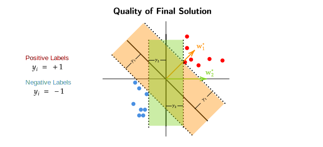

Support Vector Machine
Perceptrons and Margin
We know that in the Perceptron Algorithm the number of mistakes is given by, \(\text{#mistakes} \leq \frac{R^2}{\gamma^2}\) , we also said that data is linearly separable with margin \(\gamma\) , which means that there exists some \(w^*\) such that \(w^{*^T} x_i \geq \gamma \quad \forall i , \gamma>0\)

Question
If we were given a dataset like in the above image , which of the 2 \(w^*\) would be a better choice?
-
We can see that \(w_1^*\) has a greater margin \(\gamma_1\) when compared to \(w_2^*\) which has a smaller margin \(\gamma_2\).
-
If we want to decrease the number if mistakes our algorithm makes, we can increase the value of \(\gamma\) because \(\text{#mistakes} \leq \frac{R^2}{\gamma^2}\) , in other words number of mistakes is inversely proportional to \(\gamma^2\).The greater the \(\gamma\) the lower will be the number of mistakes.
-
Therefore , the better of the 2 \(w^*\) here is \(w_1^*\).
Maximum Margin: Formulation
Now that we know that \(w^*\) which have larger \(\gamma\) margin are better than other \(w^*\) , our goal now is to come up with a formulation that maximizes \(\gamma\) margin.
We want to maximize \(\gamma\) over \(w\) , but we arent choosing any random \(w\) , the \(w\) should satisfy the condition of \((w^T x_i)y_i \geq \gamma\).
Problem With Above Formulation
Lets say for some \(w\) the \(\gamma\) margin is , \(\{ x:w^T x = 5 \}\) , it can be argued that there exists another \(w\) such that \((2 w)^T x = 2 \times 5 = 10\). So for this \(w\) , there exist infinitely many "scaled versions".
To solve the above stated problem , we will "ground" the value of \(w\) such that \(||w||^2 = 1\). Therefore our new formulation will be,
Simplified Formulation
The above maximization can be reformulated into an expression with just one variable (\(w\)).
The equation here basically means that , we are allowing any \(w\) which linearly separates our dataset with \(\gamma\) margin and the norm square of that \(w\) must be 1 and instead of maximizing \(\gamma\), we are maximizing the width. The width here is the distance between to parallel lines of \(\gamma\) margins.
What is width(w)?
For some \(w\) which classifies a dataset , \(x_1\) and \(x_2\) be the points lying on the \(\gamma\) margins. The distance between these points (width(w)) can be given by,
Re-Simplified Formulation
Now that we know what width(w) is , we can reformulate our maximization equation as ,
Equivalently , the above experession can be turned into a minimization equation,
Constrained Optimization
Our goal now is to formulate a "dual problem" for the above minimization ("primal") problem.
But for now we will look at,
To solve for the above minimization problem we will form a lagrangian function,
For a fixed value of \(w\) , consider ,
Case 1
- Now that we have fixed a value of \(w\) , lets assume that \(g(w) > 0\).
- If \(g(w) > 0\) and \(f(w) \in \{-\infty , \infty \}\) , to maximize the above function, we can keep increasing the value \(\alpha\). When the value of alpha is increased , the value of \(g(w)\) will also increase.
- Hence , when \(g(w) > 0\) the solution if \(\infty\)
Example1 f(w) > 0
- Lets say \(f(w) = 10\) and \(g(w) = 20\) , if the value of \(\alpha\) is increased, the value of overall function will also increase. We can keep on increasing the value of \(\alpha\) and the value of overall function will keep on increasing.
- Hence , we say that the solution in this subcase is \(\infty\)
Example2 f(w) < 0
- Lets say \(f(w) = -100\) and \(g(w) = 20\) , if the value of \(\alpha\) is increased,
just like above , the value of overall function will also increase.
- When \(\alpha = 5\) ,the function will evalute to zero.
- When \(\alpha = 100\) , the function will evalute to 1900.
- Hence , we can say that the solution in this subcase also is \(\infty\)
Case 2
- In Case 2 we will assume that \(g(w) \leq 0\).
- If \(g(w) < 0\) and \(f(w) \in \{-\infty , \infty \}\) , the only way to maximize the above function is to put \(\alpha = 0\). When \(\alpha =0\) , \(g(w)\) will also become zero.
- Hence , when \(g(w) < 0\) the solution is always \(f(w)\).
Example1 f(w)>0
- Lets say \(f(w) = 10\) and \(g(w) = -20\) , no matter what value (except 0) of \(\alpha\) we use here the overall function value will always decrease. The only way to maintain the value of the overall function is to put \(\alpha = 0\).
- Hence, we say that the solution in this subcase is always \(f(w)\).
Example2 f(w)<0
- Lets say \(f(w) = -10\) and \(g(w) = -20\) , no matter what value (except 0) of \(\alpha\) we use here
the overall value of the function (just like above) will decrease.
- When \(\alpha = 5\) the function will evaluate to -110.
- When \(\alpha = 100\) the function will evaluate to -2010.
- It can be seen that if the value of \(\alpha\) is increased , the overall value of the function decreases.
- Hence , we can say that the solution in this subcase is always \(f(w)\).
Therefore the solutions for the above lagrangian maximization are,
Langrangian Function Maximization
Inside the shaded region , the function evaluates to \(f(w)\) , while outside the shaded region the function evaluates to \(\infty\).
From the above diagram we can see that for multiple values of \(w\) the function evalutes to \(f(w)\). We want to find the minimum \(w\) at which the function evaluates to \(f(w)\),
Note
Note that this expression is same as the original minimization problem we started with,
To gain more insight over our newly derived min-max problem we will try to turn it into a max-min problem.
The max-min expression will be,
Note that we can turn it into a max-min problem because both \(f\) and \(g\) are convex functions.
Multiple Constraints
If there are problems which require multiple constraints , they can be formulated as,
Equivalently this can also be written as,
Note that \(i\) here represents the number constraints and there are total \(k\) constrains.
Formulating the Dual Problem
- We started off with maximizing \(\gamma\) so that the number of mistakes made by our algoritm are less/reduced.
- We then turned it into a expression with only one variable \(w\)
- After that , we resimplified the maximization expression for \(||w||\) instead of width(w).
- Then we took a detour and solved for a constrained opitmization problem.
- We then modified the constrained optimization problem and ended with lagrangian maximization expression.
But where does this all lead to?
This leads us to getting back to the re-simplified problem and change it in such a way that it matches with the constrained optimization problem.
Our Re-Simplified Expression was,
To treat this expression as a constrained optimization problem that we did above , we have to convert this to standard form. Here the constraint is \((w^T x_i)y_i \geq 1\) but in our constrained optimization problem the constraint was \(g(w) \leq 0\).
Standardized Form
The standard form will be,
Now the langrangian function for this standardized form will be,
We know that a langrangian function can be written as an min-max expression,
Similarly , this can also be written as max-min problem,
Note that \(\alpha \geq 0\) means that \(\alpha\) is a column matrix with all the \(\alpha_i\) to be \(\geq 0\).
We will now work with this max-min problem to further deepen our understanding about our original \(||w||\) maximization problem.
Solution for Langrangian Max-Min Problem
For some \(\alpha \geq 0\),the inner minimization problem becomes an unconstrained optimization problem. We will try to find its solution using gradients,
The gradient of above expression is ,
From this we can conclude that for a fixed value of \(\alpha\) our best \(w\) would be a linear combination of \(x_i,y_i,\alpha_i\)
If we substitute this value of \(w^*_\alpha\) we can find the minimizer of the min-max expression above. On simplification after substitution,
Note that here \(w^*_\alpha\) here is in matrix notation form (\(w^*_\alpha = XY \alpha\)).
Therefore the "dual" problem to the "primal" problem will be,
So what have we gained after finally arriving at this dual problem?
- Dual Variable is in \(\mathbb{R}^n\) dimension , while the primal problem is in
\(\mathbb{R}^d\) space.
- If \(d >> n\) , its better to solve the dual problem.
- The objective in dual problem depends on \(X^TX\) , which can be kernalized.
Recap Flowchart
Support Vector Machine
Now that we know that \(w^*_\alpha\) depends on \(\alpha_i\) , where importance of a datapoint is given by \(\alpha_i\) , we want to find out the points where \(\alpha_i > 0\).
We will take a small detour and get back to this question.
Now we will input the solutions of the dual and primal problems back into their equations,
The function on the left (primal problem) will evaluate to \(f(w^*)\)
$$$$
But we already know \(\alpha^* \geq 0\) and \(g(w^*) \leq 0\). The only point where both our equations are true is,
Complementary Slackness
Similarly , for multiple constraints
Also , \(g(w^*) = 1 - (w^T x_i)y_i\) , this means the above equation can also be written as, $$ \alpha_i ( 1 - (w^T x_i)y_i) = 0 \quad \forall i $$
Now, according to Complementary Slackness , if \(\alpha_i > 0\) , then \(1 - (w^T x_i)y_i = 0\),
From the above equation we can conclude that, points which have \(\alpha_i > 0\) lie on some line denoted by \((w^T x_i)y_i = 1\). This means that the points which contribute to the best \(w^*\) only lie on the \((w^T x_i)y_i = 1\) line. Rest of the datapoints which dont lie on this line do not matter for formulation of \(w^*\).
- Only the points that are on the "Supporting" hyperplane (\((w^T x_i)y_i = 1\)) contribute to \(w^*\).
- These special points are called supoort vectors.
- Hence , this algorithm is called "Support Vector Machine (SVM)".
- \(w^*\) is a sparse linear combination of the datapoints.
Kernalization of SVM
Given a point \(x_\text{test}\) the prediction for that point is ,